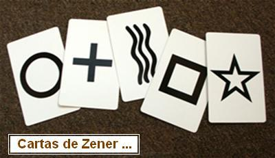

Informe de Sniffex

La lectora Kathy Focsaneanu, estudiante de postgrado del Departamento de Química de la Universidad de Ottawa, Canadá, escribe:
Veo que usted y su equipo estelar están investigando - otra vez - a los fabricantes de “Sniffex” y sentí que tenía que hacer mi pequeño aporte.
Mi padre es un experto en el tema remoción de minas terrestres. Tras servir 30 años en las fuerzas armadas, él ahora aplica su conocimiento al esfuerzo humanitario global de remover las minas terrestres y de retornar la tierra a un uso productivo. Él implementó las operaciones de desminado de las Naciones Unidas en Camboya y Bosnia, y ha trabajado en Angola, Mozambique, Tailandia, Azerbaijan y muchos otros países, ayudándolos a librarse de la calamidad de las minas terrestres. Estas operaciones ahora son el modelo para el resto de los centros de desminado de la O.N.U. Él y sus colegas han trabajado mucho para difundir el conocimiento de las consecuencias terribles del uso de minas terrestres, y han promovido incansablemente una prohibición mundial de estos dispositivos.
Recientemente, mi padre recibió un email no solicitado de un promotor del Sniffex. Él se dio cuenta de qué se trataba, y me lo pasó para que me divirtiera.
No puedo creer la desfachatez de esta gente, de anunciar su chatarra a un experto conocido y respetado en minas terrestres. La detección de minas terrestres no es un tema trivial: es un ejercicio extremadamente peligroso y de cuidado. Me enferma pensar que alguna organización comprase estos dispositivos y los pusiese en las manos de removedores de minas.
Parece que estos charlatanes creen que algunos vagos “resultados de tests” y un sitio web lujoso es todo lo que necesitan para empezar a juntar billetes (lo que, por supuesto, desafortunadamente es verdad). Esperemos que estos sinvergüenzas consigan la “exposición” que merecen.
Como prometí la semana pasada, continuaré aquí con los extraños vuelteos del Sr. Paul Johnson, el Gerente General de Sniffex S.A.-ahora conocida como “Seguridad Internacional de la Patria, S.A.”- y también el único funcionario de esa corporación. Él me escribió esta carta increíble:
Su comentario sobre el producto de mi compañía en agosto de 2005 ahora ha costado numerosas vidas en todo el mundo (creo). Seguridad Internacional de la Patria, S.A , antes Sniffex, S.A. ha sido perjudicada de un modo incalculable debido a un comentario sobre un producto que usted nunca vio, sobre el que nunca habló con alguien que lo hubiese utilizado, y que no sometió a prueba con su equipo. Y básicamente, como su abogado le dijo al mío, cuando intentamos llegar a un acuerdo para que este comentario fuera removido de la web, su respuesta fue: “Bueno; él es un idealista, y así que realmente no importa (cuáles son los hechos); él piensa lo que quiere y no hay muchas posibilidades de hacerlo cambiar de idea.”
Comentario de Randi: Esta conversación nunca ocurrió. Es quizás una versión, embarullada por Johnson, de algo que le dijeron, pero no es literal.
Así pues, no lo voy a intentar. Voy a decirle que si usted no hubiera escrito ese comentario, y todavía no apareciera al tope de los buscadores cargados con las palabras “sniffex” y “paul johnson”, muchas vidas habrían sido ahorradas. Gracias a Dios, hay gente y grupos y gobiernos que no creen todo lo que ven en la Internet y han comprado el dispositivo. Agradezca a Dios que ahorramos vidas de militares en Tailandia, que estaban a punto de cruzar un puente con una mina debajo. Agradezca a Dios que encontramos evidencia material (vainas disparadas) en un campo de muerte en este país. Y, veamos, están Beirut, Irak, Bangladesh, la India, Egipto, los militares de los EE.UU., etc, etc. usando el producto con éxito. De modo que aquí estamos, trabajando para construir una compañía; no puedo hacer nada sobre su comentario porque no puedo permitirme continuar con la demanda e ir a la corte a defender el producto que vendemos.
Comentarios de Randi: El Sr. Johnson no identifica la referencia a los “militares de EE.UU.”, hecha arriba. ¿Usted se pregunta por qué? Estoy seguro de que él preferiría que usted creyese que es con fines de seguridad, pero la razón verdadera es que los militares de los EE.UU. no han utilizado el Sniffex, no utilizan el Sniffex, y espero ciertamente que no utilicen el Sniffex.
Usted tiene una distinción, sin embargo: usted y Stocklemmon están juntos en primera fila en los buscadores. Eso lo pone a usted en muy mala compañía. Son manipuladores del mercado financiero que publican informes con basura y ganan dinero con la caída de la cotización de la acción.
Lo alentaría a leer los otros más de 100 enlaces que aparecen en esa misma búsqueda. PODRIAN darle una cierta pauta, una cierta sensación de que, quizá, apenas quizá, usted ha ido demasiado lejos y ha arriesgado vidas al desacreditar un producto que usted nunca ha visto, discutido con cualquier persona que lo hubiese visto, o ni siquiera investigado.
APASIGUARA [sic] su conciencia saber que hay lugares y situaciones donde Sniffex no funciona. Son la excepción. NO apasiguará [sic] su conciencia saber que en la mayoría de las situaciones donde hay una amenaza de ataque terrorista, Sniffex podría ser una herramienta valiosa para mantener a la gente lejos del peligro.
Lo que me sorprende como más extraño es que si usted realmente deseara saber los hechos sobre Sniffex, usted me habría llamado y habría discutido el producto conmigo, y habría arreglado una demostración, no un juego teatral con un premio de un millón de dólares, que mi asistente tiró a la basura porque parecía poco serio. De hecho, en cambio usted puso nuestro producto entre los “loquitos” del mundo paranormal.
No hay nada que discutir. Más material anecdótico no serviría para nada. Solamente tendría sentido hacer una simple y directa prueba del Sniffex, y ver al Sr. Johnson salir con un millón en el bolsillo. Johnson: acepte la prueba y demuestre su afirmación. No tengo tiempo para discutir con usted.
Bueno, felicitaciones, usted ganó. Todavía vendemos Sniffex, pero ni cerca de lo que deberíamos. Pero ahora vendemos otros muchos productos en el campo de seguridad interior. Y, tristemente, su comentario todavía disuade, a compañías y a gobiernos de todo el mundo, de considerar seriamente a Sniffex. Pero, si a usted le preocupa “salvar” gente, eche una ojeada el resto de los resultados de la búsqueda. Vea todos los lugares en que está siendo utilizado. Desafortunadamente, las dos historias que conté arriba acerca de su éxito no pueden ser publicadas, pero estaría encantado de ponerlo en contacto con la gente “de campo” que hizo los descubrimientos.
Respondí puntualmente a este discurso increíble:
¡DISPARATES! ¡Y usted lo sabe! Usted es un idiota o un loco (todavía no ha sido decidido cuál de los dos).
Y recibí ésto:
Asumiré que su respuesta es una amenaza. Lamento oír eso. Si no estoy equivocacionado [sic], usted nunca ha visto nuestro producto, nunca hablado con un usuario, ni ha recibido una demostración de ninguna clase. ¿Eso es correcto, no es así? Mi sospecha es usted se está basando en un informe de la Marina de Guerra que fue hecho en YPG (Terreno de Prueba de Yuma). Eso fue hecha antes de lo que [sic] supiéramos que Sniffex no era eficaz en áreas saturadas con los “radicales” de explosiones anteriores. YPG ha sido una sona [sic] de pruebas para bombas por al menos 30 años y a una media milla de donde probaron Sniffex hay un área que llaman “Pequeña Bagdad”. Ahora, pregúntese por qué obtuvimos acceso a YPG. La respuesta no está en el informe, pero tendré gusto de compartirla con usted, si me llama.
Estoy apesadumbrado de que usted haya tomado esta atitud [sic] hostil y no le deseo ningún daño, pero tenemos que proteger nuestra compañía y nuestro producto.
Yo contesté:
Usted está muy “equivocacionado.” He discutido largamente con usuarios que probaron a fondo el dispositivo, y recibí varias demostraciones.
Pero, en realidad, usted está “equivocacionado” en muchos aspectos.
Consideren: Parece muy evidente que incluso si esta especie de varita de radioestesia funcionara, sería inútil en una zona de guerra, saturada con “radicales.” Por “radicales” Johnson probablemente se refiere a compuestos de nitrógeno que podrían estar presentes después de una explosión, pero que serían despejados rápidamente por las corrientes de aire y/o cualquier precipitación. Nótese, por favor, que el informe de la Marina de Estados Unidos dice que en la zona había una brisa de 10 mph (16 km/h) durante las pruebas del Sniffex… Más aún: la página 42 del manual de instrucción de este juguete indica:
El operador [al hacer funcionar el Sniffex] debe estar alerta a la presencia de armas de fuego y preocuparse por removerlas de la zona de pruebas. La falta de identificación y remoción de armas de fuego dará lugar a un “falso positivo” en la dirección de un vehículo sospechoso; es decir, si bien Sniffex(r) localizó un arma o explosivo, no era el objetivo sospechoso, ni en el vehículo sospechoso… NOTA: El operador puede llevar un arma; esto no interferirá con Sniffex(r).
Increíble. ¿Un arma portada por la persona que sostiene el dispositivo no afectará la operación? Esto, por supuesto, explica el problema que podría ser encontrado cuando un soldado armado intente utilizar el Sniffex ¿No querríamos estropear el mercado de las “FFAA de EE.UU”, no es cierto? En una ocasión, haciendo una demostración de su juguete -que falló, como siempre- esta atolondrada gente de Sniffex opinó que algunas macetas con plantas en el cuarto habían afectado el dispositivo debido al fertilizante de nitrato usado en ellas. No, creo que no. ¡Esas plantas artificiales, de polietileno -plástico- no requieren fertilizante… !Una vez más, la realidad se entromete con una coartada que hubiera sido excelente. De un corresponsal extranjero, en este tema de la “contaminación”:
Cuando recibimos nuestra demostración [del Sniffex] en otro país, fue por medio de un distribuidor local, trabajando para un distribuidor regional, que nos había invitado, no alguien de los EE.UU. Oí más tarde que el tipo que nos dio la demostración fue enviado de regreso al Líbano para ser reeentrenado por el distribuidor regional. Al parecer, determinaron que él era el problema, no contaminación, en nuestro caso. Nunca me he encontrado o hablado con el Sr. Johnson o cualquiera de sus empleados directos, y la prueba de la Marina fue anterior a que yo incluso hubiera oído hablar del producto.
Lo divertido del alegato de contaminación es que del informe surge que el dispositivo al parecer no fue afectado por la contaminación cuando los usuarios sabían que los explosivos estaban presentes. Solamente cuando no sabían si había explosivos hubo problemas de contaminación. ¿Es raro cómo trabaja, no? Me recuerda la queja de contaminación durante la prueba del TOPO, en Sandia.
La prueba del “TOPO” en los Laboratorios de Sandia, Nuevo México, mencionada por este corresponsal, fue exactamente del mismo tipo de dispositivo inútil que el Sniffex, y la misma clase de quejas fue hecha, por supuesto. Hay siempre una coartada invocada; el hecho simple de que el dispositivo no funciona nunca es mencionado.
Hay más -en materia de “contaminación” de la mística señal que el Sniffex se supone capta- que fue tomado del Comando Naval de Sistemas del Mar, División Tecnológica EOD: “Informe de la Prueba: Capacidad de detección del detector portátil de explosivos Sniffex”:
Después de la colocación [del blanco], todo explosivo innecesario fue movido de la zona de pruebas durante cada ensayo, a una distancia de .35 millas (560 metros). El vendedor convino en que éste era suficiente margen para evitar la identificación accidental de explosivos… toda caja que hubiera contenido previamente explosivos, aunque ahora estuviera vacía, fue igualmente alejada del área. El dispositivo fue accionado por un representante vendedor…
[en el segundo día de pruebas, realizadas en interiores] el vendedor convino que éste era un método aceptable para evaluar las capacidades del SNIFFEX, y declaró que el SNIFFEX podría detectar los explosivos en esa situación…
¡Lo que realmente me fascina del Manual de Instrucción oficial del Sniffex es que en la página 28, Paul Johnson ha delineado exactamente el procedimiento bajo el cual él -o cualquier persona que él elija - podrían ser probados para el desafío del millón de dólares de JREF (la Fundación de James Randi)! Observen: ¡ésta es la descripción del propio Johnson de lo que sería una prueba apropiada del Sniffex (y estamos 100% de acuerdo con las condiciones de esa prueba!) Bajo “Procedimientos de Prueba a Ciegas,” él describe una disposición simple de cuatro envases, uno de los cuales deberá contener el explosivo o arma de la prueba. Sí, Sr. Johnson, aceptamos - y quisiéramos oír sus excusas para no aceptar, por favor. ¡Tal prueba ganará el premio del millón de dólares de JREF, sin discusión! Pero usted rechazará esto y encontrará maneras de esquivar el hecho de que su propia prueba -¡publicada en su propio manual! - no sería suficiente para que usted gane un millón de dólares.
Para terminar, vayan a http://www.stocklemon.com/08_01_05.html para ver otras opiniones sobre el Sniffex y sus promotores…
Más Asuntos Secretos
El lector Michael Mayfield, de Australia, escribe:
“El Secreto” (véase http://www.randi.org/jr/2007-02/021607failure.html#i3) ha andado circulando por algún tiempo. Por supuesto, usted se sobresaltaría al descubrir que fue promovido en el programa de TV de Larry King, entre otros (Montel será el siguiente?). Ha sido en general ignorado en su país de orígen, Australia, hasta muy recientemente. ¡Quizás porque la mayoría de la gente es demasiado viva para ser embaucada por él! Es, sin embargo, un tema de debate de actualidad en algunos lugares de trabajo en el momento. Anita Quigley, una periodista del popular tabloide Telégrafo Diario, de Sydney, le dedicó recientemente una columna entera, absolutamente crítica.
Es difícil describir cuánto disparate new-age y pavada solemne suscita “El Secreto” en realidad. ¡Quizas la mejor y más divertida síntesis que he visto hasta ahora es la cita del periodista Jeffrey Ressner de Time Magazine, quien escribió “un chico que desea una bicicleta BMX roja recorta una foto de un catálogo, se concentra muy fuerte, y es recompensado con el elegante biciclo”!
Un Cliente Muy Satisfecho
Esta es una hilarante respuesta al artículo del Telégrafo Diario (de Australia) donde la columnista Anita Quigley fustiga el film “El Secreto.”
Estimada Anita:
Aquí va otra alternativa a El Secreto que te estoy transmitiendo porque definitivamente me funcionó, y todos podríamos beneficiarnos con un poco más de calma en nuestras vidas. Siguiendo el simple consejo que escuché en un programa de TV del (psicólogo) Dr. Phil, finalmente he hallado paz interior. El Dr. Phil proclamó que la vía para alcanzar paz interior es terminar todo lo que hemos comenzado. De modo que busqué en la casa para ver qué cosas había comenzado y no terminado y, antes de salir de casa esta mañana, terminé una botella de Merlot, una botella de Cardonay, a botlla de Baileys, una botla de Kehuha, a paqete de Tim Toms, elll ressto de mis resettts dde Prozic y Valum, eel reso de la trota de qeso, un pcoo de cfaé y una jaja cholates. Nno tnés nidea lobin qe mesinto.

¡Upps!
Me han recordado que la semana pasada no cumplí con mi promesa de proveer a los lectores una explicación del segundo truco de un repertorio corto de trucos “psíquicos” hechos comúnmente por esos réprobos que alegan tener poderes reales. Lo siento. Aquí está cómo hacen el truco por el que pretenden enviar una imagen telepática de una carta ESP, de un dibujo simple, o de un número, que entonces le piden a la audiencia que “capte”.
Primero, las cartas standard para las pruebas de ESP (Percepción Extra Sensorial) -cartas de Zener- consisten en cinco símbolos diferentes, mostrados aquí. Consisten en una, dos, tres o más líneas o componentes, según lo mostrado en esta secuencia, así que también representan números. La probabilidad de que una tarjeta sea elegida, sólo por azar, es obviamente de uno en cinco, o el 20%. Observen que dije, “sólo por azar.” Los magos saben desde hace muchos, muchos años, que el símbolo más probable en ser elegido es la estrella, por una cantidad de razones psicológicas. ¡Así, pues, cuando el “psíquico” opta por el símbolo que la audiencia debería encontrar por él, siempre elige la estrella!
Curiosamente, Uri Geller ha hecho este truco muchas veces -eligiendo siempre el símbolo de la estrella- por lo menos desde 1997, cuando apareció en “Más Allá de lo Creible” en el Reino Unido. ¿Él decidía “proyectar” el símbolo de la estrella? Sipi…!
En cuanto al pedido del “psíquico” de que la audiencia “haga un dibujo simple de cualquier objeto” que él podrá predecir o discernir mágicamente, los estudios han demostrado que, en gran medida, el dibujo elegido más a menudo es el de una casa; otra vez, por una variedad de razones. Siguen, en orden de preferencia, una figura con palitos, un barco de vela, y una cara… ¡Sólo éstos, cuando hay una selección enorme - literalmente millares de objetos posibles - disponible para que el sujeto elija! La ilustración muestra los porcentajes de los cuatro objetos más elegidos.

Cuando se le pide que elija un número al azar - lo que nadie puede hacer sin asistencia técnica, debido a preferencias o tendencias incorporadas (que, a su vez, pueden ser reforzadas mediante suggestion) las opciones del sujeto son igualmente limitadas. Encontramos que cuando se pide elegir un número entre 1 y 10 -con la limitación, “no elija 3, porque eso es lo que elige todo el mundo!”- la preferencia abrumadora es 7. Para un número de dos dígitos es 37, ó 35. La gente muy raramente elige un dígito repetido - 22 ó 99 casi nunca, - y los números impares son muy preferidos respecto de los pares. Esto aumenta dramáticamente las probabilidades de que el “psíquico” acierte.
Hay muchos otros trucos, por supuesto. Por ejemplo, cuando un “adivino” se ve obligado a hacer el truco de transmitir mentalmente al público, por medio de la ESP, la estrella, en un programa de TV en vivo, aunque la preferencia mencionada asegurará probablemente el éxito, no viene mal tener amigos en el público que insistan para que se elija la estrella, no es cierto? Sé de una ocasión, cuando un programa radial en el Reino Unido consultó a los oyentes acerca de la imagen mental que estaban “captando” del adivino que “transmitía” desde el estudio, pero también le pidió, a los oyentes que llamaban, sus números de teléfono para comprobar posteriormente. ¡Y caramba! Cuando muchos de los que habían adivinado la imagen fueron llamados después, ¡los números de teléfono resultaron incorrectos! Uno sólo puede conjeturar cómo puede haber sucedido eso…
¡Armonícese!

Mi amigo noruego Trygve nos envía a http://www.vitalterapi.net/butikk/index.php?act=viewProd&productId=36, donde encontraremos una “Armonizador de Electricidad” que - por cerca de $250 dólares…
… amortigua el “campo caótico” de la electricidad y puede disminuir la radiación dañosa en más del 50%.
Hay más:
¡Simple de instalar, pero asegúrese de instalarlo a una distancia segura de los enchufes! El Armonizador de Electricidad debe ser instalado siempre cuando usted desvía su hogar de la radiación de tierra.
- Bueno, puesto que yo desvío mi hogar regularmente, ¿mejor que me consiga ya uno de estos salvavidas, no es cierto? Pero, se pregunta Trygve:
-
¿Después de que usted haya comprado estos hilarantemente costosos artefactos; esa gente lanzará quizá un “Armonizador del Ahorro”, también?
Esas pruebas australianas de radiestesia
En http://www.randi.org/jr/2007-01/011207challenge.html#i1 -la columna del 12 de enero- verán una declaración de Adam Hart-Davis que he cuestionado. Decía:
No soy ningún creyente en lo sobrenatural, pero he visto demasiados éxitos de radiestesia como para rechazarla de un plumazo, y he visto a un razonable profesor de ingeniería montar una prueba investigativa exitosa
Sí, ya sé del cheque de Randi, y también he visto críticamente el film de una prueba masiva de radiestesia que él realizó en Australia En esa prueba él engañó a los concursantes con estadísticas embrolladas. Ellos demostraron de hecho un efecto significativo, pero él se las arregló para salir del paso.
No estoy preparado para negar la radiestesia sin más trámite.
Verán que me opuse vigorosamente a estos comentarios. Y volví a saber del Sr. Hart-Davis:
Muchas gracias por su email y por sus gentiles palabras sobre mi trabajo. Quizás recuerde que almorzamos en Londres alrededor de 1979, cuando yo trabajaba en una de las series de Arthur C. Clarke, y luego lo filmé cuando usted dió una conferencia sobre doblado de cucharas en UCLA. (Universidad de California, Los Angeles)
La semana pasada recibí una letra de un tal Chris Oldman que supongo había oído una observación al paso que hice en una entrevista de radio, y que le había hecho caer la mandíbula al piso. En la entrevista me preguntaron si, por haber trabajado en la serie de Clarke, creía en lo paranormal. Dije que no, definitivamente no, aunque no estaba preparado completamente para eliminar la radioestesia natural, puesto que gente con ramitas bifurcadas había caminado sobre la tierra y había cavado más adelante para encontrar agua.
En su carta, el Sr. Oldman me acusa de aceptar un alegato de algo paranormal, lo que definitivamente no hice; eso simplemente, no era verdad.
En mi respuesta al Sr. Oldman critiqué el manejo de la estadística en la prueba australiana de radioestesia, una prueba que mostramos en la serie de Clarke, por la razón siguiente. (Parafraseo del libro EL MUNDO DE LOS EXTRA=D1OS PODERES DE ARTHUR C. CLARKE por John Fairley y Simon Welfare:) Buscando oro y agua, con una chance de diez por ciento de obtener un buen resultado, los radioestésicos afirmaron que conseguirían 80 por ciento de éxito. Alcanzaron, en la práctica, un índice total de éxito de 12 por ciento, combinando la prueba del oro y la prueba de agua. Pero en la prueba de agua solamente anotaron 22 por ciento: bien por encima de la pura casualidad. Los resultados de las dos pruebas no deberían haber sido combinados.
No creo que la mandíbula de nadie deba caer porque yo adopte una actitud escéptica y crítica ante tal evidencia. Apruebo fuertemente su postura escéptica y su desafío del millón de dólares, y remito con frecuencia a la gente a su sitio web, especialmente a aquellos que me escriben acerca de sus máquinas de movimiento perpetuo.
Cuídese, y continúe, por favor, con su excelente trabajo,
Adam Hart-Davis
Hay varios hechos que este caballero -y Simon Welfare, que yo habría creído podría haber tomado contacto conmigo por este tema - desconocen. Primero, los radioestetas mismos -no nosotros- insistieron en que los resultados de todas sus tentativas fuesen combinados; esperaban obtener así el mejor resultado, y habían acordado dividir igualmente el premio de A$50,000 si lo ganaban. En tales casos, las demandas de los aspirantes son aceptadas siempre que no comprometan el protocolo o los resultados de las pruebas. En segundo lugar, debido a la anomalía percibida, esos mismos operadores fueron probados de nuevo, esta vez en Perth, Australia, muy poco después de las pruebas citadas, porque sentían que andarían mejor en esa localización. Aunque sabía que esta prueba adicional sería hecha y aprobé ese proceso, tuve que volver a los EE.UU. y no pude estar presente. Fallaron espectacularmente, obteniendo resultados que reflejaron casi exactamente las pruebas de Sydney al revés, de modo que el índice general de todas las pruebas fue un resultado nulo.
Sin embargo, el Sr. Hart-Davis, citando el libro de Fairley-Welfare, describe el resultado de 22 por ciento (la expectativa de chance era el 10%) como siendo “bien superior al azar”, sin considerar o aún sin mencionar el número de ensayos conducidos. La significación de ese número es crítica para llegar a cualquier conclusión, y el número de ensays en este caso no era suficientemente alto como para admirar a nadie.
En todo caso, no es apropiado seleccionar ninguna sección, porción o aspecto de un sistema de pruebas para establecer un resultado significativo, a menos que, por supuesto, la intención de hacerlo sea anunciada por adelantado. Aunque ese método puede ser utilizado para procedimientos preliminares que ayudarán a diseñar una prueba confirmativa final, no es aplicable a menos que sea anunciado así. Tirando una moneda, uno no puede seleccionar una secuencia de seis caras para demostrar una puntuación perfecta, si la meta era obtener caras. Eso se llama “seleccionar datos” y es el error invocado más a menudo al analizar pruebas dirigidas por aficionados..
Tampoco veo ninguna referencia al “razonable profesor de ingeniería” que realizó “una prueba investigativa exitosa” de radiestesia, ni sus resultados son mencionados. Mucho quisiéramos entrar en contacto con él, de modo que sus pruebas pudieran ser repetidas y confirmadas.
Metámonos con este tema
El Dr. Bruce Flamm - véase http://www.randi.org/jr/2007-02/021607failure.html#i7 - nos pide que ayudemos:
He aquí una oportunidad de prestar un gran servicio a la ciencia y a la medicina basada en la evidencia. Estoy pidiendo a periodistas y editores que llamen al Dr. Lawrence D. Devoe al Boletín de Medicina Reproductiva (JRM) y le pidan que explique por qué rehúsa retractar el fraudulento estudio Cha/Wirth/Lobo “Rezo para Embarazo”. En vista del artículo del diario Los Angeles Times {de la semana pasada) no puedo pensar en una sóla razón legítima para esta negligencia en actuar de inmediato. Por favor publiquen su respuesta en su boletín. =0D Este es un breve sumario de los hechos:
Los resultados del estudio Cha/Wirth/Lobo de 2001 desafían las leyes de la física. Los autores afirman que oraciones de Estados Unidos y Canadá causaron un aumento del 100% en la tasa de éxito de complejos procedimientos IVF (in vitro) para infertilidad realizados en Corea del Sur. El estudio originalmente tenía tres autores; Kwang Cha, un misterioso doctor en infertilidad; Daniel Wirth, un investigador de lo “paranormal”, y Rogerio Lobo, entonces titular de un departamento de la Universidad Columbia, de Nueva York. Ver http://tinyurl.com/2d69qg.
Los sorprendentes resultados fueron estadísticamente tan significativos que no podrían haber sido producto del mero azar. Los resultados fueron sobrenaturales, paranormales o fraudulentos. Ver http://tinyurl.com/24ce35.
Daniel Wirth, un hombre sin formación científica o médica, fue el individuo que, se supone, condujo la excéntrica investigación. Los co-autores Cha y Lobo ahora están de acuerdo en eso. El Sr. Wirth está en una prisión federal, con una sentencia de cinco años por fraude. Ha confesado un pasado de 20 años de actividad criminal fraudulenta. Ver http://tinyurl.com/2pqwul
Los mentores de Wirth, que supervisaron su maestría en “parapsicología” creen ahora que todos los estudios de terapias escritos por Wirth pueden ser falsos. Han publicado un extenso artículo con los fundamentos de esa opinión. Ver http://tinyurl.com/2wb65g.
Rogerio Lobo, de la Universidad Columbia, admitió que no tuvo nada que ver con la supuesta investigación, y dijo que no puede dar fé de ninguno de los métodos o resultados. Dice que sólo editó el manuscrito y asistió con su publicación. Ha removido su nombre del estudio. Ver http://tinyurl.com/2rnxyj
Kwang Cha, el único autor remanente del informe Cha/Wirth/Lobo que no está en la cárcel, ha sido ahora acusado de plagio. En 2005, Cha publicó un estudio en el Boletín de Fertilidad y Esterilidad. Hoy, el editor en jefe de Fertilidad y Esterilidad anunció que el artículo fue plagiado; es una copia palabra por palabra de un trabajo publicado por un autor diferente en un boletín médico coreano. El editor recomendará a su junta editorial que el artículo de Cha de 2005 sea retirado del boletín y que Cha y todos los autores mencionados en él sean impedidos de publicar en el boletín por tres años. Ver http://tinyurl.com/2phdwf.
Tras lo anterior, no queda ningún autor para defender el misterioso estudio Cha/Wirth/Lobo de 2001 y absolutamente ninguna razón para creer en sus absurdos resultados. Sin embargo, el Dr. Devoe, editor del Boletín de Medicina Reproductiva, aún rehúsa retirar el incoherente estudio.
Estoy seguro de que usted entiende que esta ultrajante e inusitada conducta del editor de un boletín científico que es avalado por profesionales amenaza las bases de la medicina racional y la credibilidad de la literatura científica. Cómo puede alguien decidir qué artículos son confiables si textos que se sabe son fraudulentos no son retirados?
Insto a llamar al Dr. Devoe y preguntarle por qué insiste en que un texto fraudulento permanezca entre la literatura científica. Aparentemente, no está respondiendo los e-mails, pero está aceptando llamados de periodistas. Acá está la información de contacto: http://www.reproductivemedicine.com/Admin/Contact.htm
Ultimas Noticias! Enviado a la prensa por Bruce Flamm:
El editor de Fertilidad y Esterilidad, Dr. Alan DeCherney, dice ahora que Cha y sus asociados cometieron no sólo plagio, sino también perjurio. Confirma que todos los autores habían firmado un documento donde declaraban que la investigación era original y que no había sido publicada en otro boletín. No sé cómo va a escurrirse Cha de ésto…
Devoe, en el JRM, ya no tiene pie sobre el que pararse. Este incidente desvanece su última excusa para no retirar el absurdo artículo de 2001. Qué hará el JRM ahora? …Ha estado contemplando el tema por cinco años!
El Dr. DeCherney, quien se ha referido sucintamente al documento Cha/Wirth/Lobo como “disparate”, dice que recomienda ahora que el Boletin de Fertilidad y Esterilidad publique una declaración de que el trabajo fue plagiado, y prohiba que todos los autores publiquen en él por tres años. Cha no pudo ser localizado para que exprese su opinion y no devuelve las llamadas, ni tampoco lo hace el Boletín de Medicina Reproductiva. El Dr. DeCherney afirma que su boletín, para empezar, había declinado publicar los resultados de Cha/Wirth/Lobo. Es muy obvio que Devoe no tiene razones para ignorar la abrumadora evidencia de que la farsa de la Oración por la Fertilidad es un fraude descarado, puro y simple. Pese a ello, ha sellado su Torre de Marfil y decidido permitir que tal vacuidad continúe tan tranquila. El dragón está a las puertas, pero él simplemente pone la música más fuerte… Lectores, ésta es - como el Dr. Flamm dice arriba - una ultrajante e inaudita actitud por un científico que hasta ahora podría haber sido respetado y escuchado. Por favor tomen acción en este tema, e infórmennos de cualquier respuesta.
Cada vez más tonto
El lector Doug Richardson escribe:
La referencia a “Capricornio Uno” en la columna de esta [la pasada] semana me recuerda este sitio web que descubrí recientemente, creado por la gente de Hare Krishna: http://science.krishna.org/Articles/2000/08/00082.html.
Nunca había sabido que la Luna está 800,000 millas (1.287.000 km) más lejos de la Tierra que el Sol; usted sí? Hagamos campaña para que eso sea enseñado en las escuelas, como una alternativa a la “ciencia atea” que dice que la Luna está más cerca. A lo mejor podemos conseguir que Bill O’Reilly y Ann Coulter firmen el petitorio. Sin embargo, en otro sitio web de la misma gente, http://www.salagram.net/MoonLandingHoax.htm, el Swami Prabhupada (fundador del culto) dice que la Luna está a 1,600,000 millas “arriba del Sol”; dos veces más lejos. No estoy seguro qué cifra creer. Quizás entonar cánticos ayude? Hare Krishna, Hare Krishna, Bla-bla Bla-bla…

Doug, estoy igualmente divertido por la enseñanza que los HK ofrecen en su sitio web:
Aunque muchos creen que el hombre alcanzó la Luna por primera vez en julio de 1969, tenemos información de una fuente muy confiable -las escrituras Védicas Sánscritas- que los astronautas nunca fueron realmente a la Luna. El aterrizaje tripulado en la Luna fue una simulación colosal.
Bueno, fin de la discusión, no es así? Estos textos tienen tres mil años de antiguedad, así que no pueden ser puestos en duda… Y presten atención a la expresión del swami. Obviamente no es un hombre con el que se puede bromear. Podría freír un huevo con sólo mirarlo…
Balbuceos de bebé
Desde el Reino Unido, Tony Youens nos remite a YouTube (www.youtube.com/watch?v=JK3cul71BQk) para que veamos al animador Charlie Brooker dándole a su audiencia su opinión sobre Derek Ogilvie, una actual maravilla “psíquica” que tiene allá un show llamado “El Lector de la Mente del Bebé.” Bueno; no nos podemos reír de Gran Bretaña, siendo que hemos tenido el programa “Adivino de Cachorros”, que tiene más o menos el mismo sentido. Dice Charlie:
Veamos: no estoy diciendo que Derek y todos los otros psíquicos no tienen habilidades especiales; solo estoy diciendo que si las tienen, todas las leyes conocidas de la física deberán ser re-escritas, pero, después de todo: Qué es la ciencia? Digo: ahh, es sólo un sistema de conocimientos acerca de cómo funciona nuestro mundo, rigurosamente probado y revisado por profesionales, y ensamblado a través de siglos, nada más. No es un parche de superstición irreflexiva, que ha subsistido por mucho más tiempo y que nos ha traído cosas excitantes como fantasmas y demonios, juicios de brujería, el Hada Madrina, y, por supuesto la lectura de mentes de bebés.

Ogilvie, para nosotros no sorprendentemente, ha estado anunciando a la prensa que ha aceptado el desafío de la JREF y la posibilidad de ganar un millón de dólares (lo que ciertamente aún no ha hecho). Pese a repetidas promesas durante meses, se ha rehusado a enviar el formulario de inscripción. Tony Youens nos envía esta cita de Ogilvie:
He comenzado a trabajar en mi nuevo proyecto. No puedo contar mucho acerca de él, de modo que sigan esta columna para obtener más detalles, pero lo que diré es que James Randi y yo estaremos trabajando juntos muy pronto! Supongo que ustedes no pueden esperar a enterarse qué pasa pero hay una gran suma de dinero en juego: un millón de dólares, en realidad! Espero que James y yo terminemos siendo buenos amigos luego de ésto, ya que realmente me gustaría trabajar con él en el futuro, en otros proyectos.
Bueno, buena suerte, Derek, con todos esos “futuros proyectos,”! Seguro que yo no voy a estar en ellos!
El programa es tan tonto como podrán imaginar, con Ogilvie chillando en falsetto lo que él piensa que el bebé desea. Un prominente equipo de producción de TV del Reino Unido se propone hacer un programa especial sobre Ogilvie, y hemos aceptado participar sólo si Ogilvie hace una presentación formal, lo que aún rehúsa hacer. Es de esperar que si el programa sigue adelante, en él será dicho claramente que fue el Psíquico de Bebés, y no la JREF, el que se desdijo del desafío.
Nunca se sabe…
Otra retirada
El lector Ben Teague nos mandó el email “Aquamantra” (ver http://www.randi.org/jr/2007-02/021607failure.html#i14) acerca del premio de la JREF:
Por favor considere aceptar el desafío del millón de dólares y probar que el agua que usted está vendiendo realmente hace lo que usted dice que hace. Por favor, haga click aquí para más detalles: http://www.randi.org/research/index.html.
Llegó una respuesta -la que habríamos esperado de alguien desafiado de ese modo- con las excusas usuales:
Gracias por su consideración.
Nosotros consideraríamos, sin embargo, que nuestra agua no necesita ser probada. Además, de acuerdo con las limitaciones de la física cuántica según la ciencia convencional, el Observador es el Creador de su realidad. Y dado que el Sr. Randi es claramente un no-creyente en Aquamantra o sus productos, su observación va a ditocionar [sic] cualquier test y, por lo tanto, la prueba dará lo que él esta’buscando, y no lo que es la verdad universal. La prueba en sus propias vidas, es suficiente para que la gente sepa que venimos de la verdad y el amor. Para Aquamantra, la alegría y la felicidad que recibimos en emails, llamados y apoyos es prueba suficiente de que hemos criado [sic] un producto para el bien común de la humanidad. Paz y Bendiciones a usted, mi amigo.
Otro lector, Doug Kosty, también les escribió:
Sólo me preguntaba si ustedes tienen algunos datos que apoyen las afirmaciones que ustedes hacen acerca de sus productos. Por supuesto, en lo referente a cualquier alegación que vaya más allá de las propiedades del agua corriente de la canilla. Esperando sus referencias sobre los estudios realizados….
Otra vez, llegó una respuesta inmediata y cortés, pero totalmente evasiva:
Aquamantra no afirma nada que vaya más allá de las propiedades de lo que es agua natural de manantial, que viene del Monte Palomar. Nuestra misión es de verdad y amor, para inspirar y conmover a la gente, desde el interior de sus almas. Alentamos a la gente a pensar YO SOY AMADO, y entonces Beber nuestra agua. Queda completamente a decisión de cada individuo cómo saborear el agua. En respuesta a su pregunta, no es nuestra finalidad investigar cómo cada uno saborea nuestra agua, pero si usted tiene curiosidad, le recomendamos leer nuestra página testimonial, ya que hay personas que admiran y aman nuestro mensaje universal, de crear una humanidad mejor.
El lector Mark Tucker comenta:
Acabo de terminar de leer sus comentarios sobre el agua de manantial Aquamantra(tm), y de visitar su sitio web. Cosas raras (aunque modelos bonitas).
Noté, en su página “Qué es un mantra?”, una invitación: “Cuál es la frase que lo ayuda a seguir día a día?” preguntan. “Mándenos por email su mantra; tal vez lo usaremos para crear nuestra siguiente AQUAMANTRA!”
OK, lo haré. Cómo era? “Soy muy vivo para caer con esta basura… Soy muy vivo para caer con esta basura…”
El lector Art Kaufman buscó en la base de datos de la Oficina de Patentes y Marcas de Fábrica de EE.UU, que revela que ni “Soy saludable” ni “Tengo suerte” son marcas registradas activas, aunque “Yo Soy Amado” aparece activa varias veces. Art comenta:
Dios! Proveedores de embrujos mienten para que su material luzca más “real.” Quien lo habria pensado?
Primero, debemos respetar que la gente de Aquamantra respondió estas consultas; en verdad, eso sucede muy raramente. Pero, si miramos con cuidado, vemos aquí una rápida retirada, no responder a preguntas y la vieja maniobra de la cabeza en la arena. Ah, y casi me olvido: Paz y Bendiciones…
Expedición a Ninguna Parte
El lector P.T. Quinn, de Ann Arbor, escribe:
No tenía idea de que la Tierra es hueca y que probablemente una civilización vive adentro. Aparentemente, hay alguna clase de portal en el Polo Norte, y un grupo de tipos que se autodenominan “Exploraciones Planetarias Avanzadas, LLC” de 248 Lawrence Street, Madisonville, Kentucky, están organizando una expedición al Polo Norte. Son parte de un grupo llamado “La Fundación de Ciencia Fénix”, dirigida por un sujeto llamado (Dr.) Brooks A. Agnew.
Encontré toda esa información empezando por aquí: http://www.ourhollowearth.com/ourhollo/index.html. Esa dirección enlazó con ésta: http://phoenixsciencefoundation.org/apex_form.htm.
Primero:
Alto Secreto Mundial: Nuestra Tierra es Hueca! Pueden la Tierra, la Luna, los planetas y las estrellas ser todas cuerpos huecos? Increíblemente, la respuesta es Sí! Y muy probablemente están habitados por dentro!
Luego proclaman:
La Expedición al Polo Norte está agendada para salir de Murmansk, Rusia, el 4 de Julio de 2007 y regresar el 17 de julio de 2007. Si la financiación completa requerida para lanzar el NPIEE (Expedición del Plo Norte a la Tierra Interior) no es obtenida para el 29 de junio de 2007, la NPIEE podrá ser pospuesta para el año siguiente. Nos reservamos el derecho de utilizar inversions y donación [sic] para cualquier fin legítimo relacionado con la realización de la NPIEE.
Agregan:
No! No somos ningún grupo marginal de cultores de la New-Age publicitando una historia de ficción! Hasta donde sabemos, nunca han habido datos, de ninguna fuente, recolectados de esta área del planeta Tierra. De qué tiene miedo? De descubrir que no estamos solos sobre… o EN este planeta? Adelante. Unase a nosotros. Vayamos y veamos. No podemos ir a Marte o a la Luna, pero podemos ir al Polo Norte.
Y:
La ciencia es real. La historia es de hace más de 5.000 años. Si descubrimos algo que altere significativamente el concepto de la actual estructura de la Tierra o revele la presencia de vida distinta de nuestra actual aceptada civilización, podría ser la más grande expedición en la historia del mundo.
La ambiciosa intención del grupo es incluir los siguientes participantes:
33 espacios para Científicos e Ingenieros 15 espacios para directores de cine y fotógrafos 5 espacios para expertos en IT Tecnología de la Internet y conexiones satelitales 23 espacios para profesionales de política exterior y embajadores 24 espacios para anteriores miembros de la expedición
Hay mucha más historia de la que puedo mencionar aquí. Involucra a un piel roja americano, de credo mormón, que cree que la civilización podría ser una “Tribu Perdida de Israel” y aguarda ansioso encontrar a sus “hermanos”, o algo así. Se podría encontrar algo más tonto? Justo cuando usted cree haberlo oído todo -como la historia del “Devorador del Sol”- alguna otra cosa responde esa pregunta con un sonoro sí.
Al menos, amigos, estamos seguros de que éste no es “un grupo marginal de cultores del New-Age”. Habíamos examinado esta vieja y agotada idea antes, por ejemplo en http://www.randi.org/encyclopedia/Hollow%20Earth%20theory.html, y en http://www.randi.org/jr/052804reggie.html#11…
Tratando de subirse al negocio

Sin duda inspirado por la conmoción producida por la reciente serie de TV sobre Uri Geller en el canal 2, el canal 10 de Israel apareció con una serie llamada “El Poder,” que, hasta ahora, ha tenido el poder de ser ignorada por la prensa israelí. Conciente de los problemas del canal 2, este nuevo afronte a la razón pone a diez supuestos “psíquicos” bajo examen, con un panel de cuatro “expertos” que vota sobre quién debería salir o continuar, luego de que todos hacen sus truquitos. Hasta ahora, “adivinación” y movimiento de péndulo han sido ejemplificados como evidencia del admirable “poder,” pero aún no han habido aclamaciones callejeras.
En mi opinión, el canal 10 vió que las afirmaciones de los psíquicos -mal o bien- atraerían atención, y decidieron treparse al carro del negocio. Hora de bajarse, muchachos. El negocio está rodando cuesta abajo, y rápido…
Argumentos de la “Ciencia” Creacionista
El lector Jan-Eric Nystrom:
Mientras, usando el “Google-Tierra”, examinaba áreas estadounidenses de interés geológico, tropecé con este enlace agregado a GoogleTierra: http://www.creationscience.com/. Imagino que este sitio le será familiar? Para divertirme, entré al sitio, y en pocos segundos encontré estas ridículas afirmaciones en su sección astrofísica, que copio aquí, con mis comentarios:
Saturno tiene 33 lunas conocidas. Una de ellas, llamada Febe, tiene una órbita casi perpendicular al ecuador de Saturno. Esto es algo dífícil de explicar para los evolucionistas.
Randi: No, sólo 19, pero con montones de pedacitos más chicos orbitando. ¡Y no hay ninguna dificultad en proveer excelentes explicaciones para esta órbita oblicua! ¿La Biblia da alguna evidencia sobre eso?
- Jan-Eric:
-
Los creacionistas lo vuelven realmente simple: “Fue creada de ese modo…”
Los geólogos admiten que no saben cómo el Gran Cañon (del Colorado) se formó.
Randi: Mal. No “admiten” tal cosa. Tienen una excelente imagen de lo sucedido, y una plétora de sólida evidencia. Qué ofrece la Biblia como evidencia…? Nada.
- Jan-Eric:
-
Ah, sí? Yo creo que los geólogos tienen una buena idea…
Se acepta ahora que no hay placas tectónicas en Venus. (La parte II de este libro explicará porqué tampoco hay placas tectónicas en la Tierra.)
Randi: Dejaré hablar a Jan-Eric…
- Jan-Eric:
-
O-ho-ho! Podemos medir la deriva continental en la Tierra. Además, el hecho de que no haya placas tectónicas en Venus no demuestra nada respecto de la Tierra!
La Luna existe. Si no fue arrancada o expulsada desde la Tierra, no fue formada de partículas más pequeñas cercanas a su órbita actual ni fue capturada del exterior de su órbita actual, sólo resta una hipótesis: la Luna fue creada en su actual órbita.
Randi: Al menos la primera oración es correcta. Hay tres “si” condicionales acá, cada uno de los cuales daría una respuesta, con diferentes grados de probabilidad; esta técnica de mostrar que la ciencia aún examina diversas posibilidades es un intento de mostrar que la ciencia no sabe nada con total seguridad. Pero la ciencia considera todas los posibles alternativas, en tanto la religión se vuelca a la Biblia… Y no encuentra nada..
- Jan-Eric:
-
Sólo una hipótesis? Yo podría inventar un montón más…
Si la Tierra hubiera estado fundida, materiales densos e inertes como el oro se habrían hundido hasta el centro de la Tierra. El oro es 70% más denso que el plomo, pero, sin embargo, aparece en la superficie de la Tierra. Por lo tanto, la Tierra jamás estuvo fundida ni se formó por bombardeo de meteoritos.
Randi: Quién dijo formada “por bombardeo de meteoritos”? Y quizás el núcleo de la Tierra consiste en oro fundido…? Hasta qué grado de la escuela cursaron estos tipos… si es que fueron?
- Jan-Eric:
-
Linda prueba! Como cualquier mago aficionado sabe, uno puede conseguir que una aguja de acero, o aún un penique de cobre floten en un vaso de agua. Sin embargo, para ser científicamente correctos, debo señalar que este truco NO es una prueba de que la Tierra ha estado fundida ni de la teoría del bombardeo…
Como Venus está relativamente cerca del Sol, su atmósfera is de 860=B0F; tan caliente que las rocas de su superficie deben ser débiles, o como “alquitranadas” (El plomo funde a 622=B0F y el zinc a 787=B0F.) Sólo si las rocas sumergidas de Venus están frías y duras, las montañas pueden desafiar la gravedad. Esto nos permite sacar dos conclusiones, y ambas contradicen las principales presunciones evolucionistas.
Randi: Por favor: Cuáles son esas no mencionadas “presunciones”?
- Jan-Eric:
-
Esta afirmación sólo revela que los creacionistas no saben de física ni de química. El plomo y el zinc no son rocas, y su punto de fusión es irrelevante. La mayor parte de las rocas no son como “alquitranadas” a 860=B0F (460=B0C). Cierto, hay un considerable rango de temperaturas de fusión para diferentes composiciones de rocas. Los silicatos (o sea las rocas más comunes) funden a alrededor de 1800=B0C, pero todos se vuelven duros como piedra (perdón por el juego de palabras) cuando se enfrían a alrededor de 500=B0C.
Esa costosa jaula
Como pasa a menudo, nuestro amigo Avital Pilpel nos ha provisto un poco de sabiduría bien obtenida…
El comentario del Dr. Emoto (suena como un villano de historieta de los años 50, no?) acerca de “el aroma del pensamiento 100% puro” me recuerda a un vaporizador para autos (ése que es un cartón perfumado) que vi recientemente. Tenía esencia de “tesoro”, con una ilustración de un cofre del tesoro rebosante de oro y diamantes. Cómo? Un aroma a tesoro: no atraerá a los ladrones de autos?
Respecto de la jaula de monos “Feng Shui” (no es una metáfora) me parece que el problema no es la estupidez de los cuidadores del zoológico sino el cinismo de la firma de Relaciones Públicas del zoológico. Pagar $4500 dólares adicionales a un charlatán para que una jaula que había costado $7,000,000, con monos de $1,000,000, se transforme en la “primera exhibición zoológica diseñada según feng-shui” del mundo es un buen negocio. Seguro que, por un minúsculo porcentaje extra del costo total, va a atraer a los entusiastas del Feng Shui, de los que hay unos cuantos en Los Angeles. Prepárense a que las propiedades feng shui de la jaula sean prominentemente destacadas en la publicidad.
Es un truco de comercialización -no una filosofía- especular con las creencias de los potenciales clientes. Si la gente de marketing del zoológico descubre que no lo visitan suficientes musulmanes, prepárense a ver el “primer zoológico en América donde los leones comen sólo carne halal”. Los Cientologistas, inexplicablemente, permanecieron a un costado? Prepárense a una invasión de animales “clarificados”. Los creacionistas no visitarían un zoológico “darwinista”? Suprímanse las señales pro-evolucionistas junto a las jaulas, o véndanse libros con “teorías alternativas” de “biología” en la tienda del zoológico.
Después de todo, la única religión en la que las firmas de RRPP (y Montel Williams) realmente creen, es la del Todopoderoso Dólar.
Creo que ella cree
El lector John Williams, de Lovelady, Texas, informó a Joan Ocean - quien tiene el sitio sobre Sasquatch que mencionamos la semana pasada y que se presenta a sí misma como una “Licenciada en Ciencias”:
Usted sabe que si puede probar lo que afirma acerca de los Sasquatch en su website, usted puede ser elegible para el millón de dólares de James Randi? Los details pueden ser obtenidos en http://www.randi.org/. Estaría deseosa de hacer la prueba? Gracias por contestar.
La Sra/Srita Ocean le contestó a John prontamente:
Gracias por pensar en mí. Tengo muchos testigos, además de mí, que han tenido contacto con este grupo especial de 34 Sabios (a los que llamamos Sasquatch). Pero ellos no necesitan dinero y, como usted comprenderá, su privacidad y su localizacíón deben ser respetadas, para su seguridad. Yo sólo quiero que la gente sepa acerca de ellos, en la esperanza de que algún día la raza humana pueda encontrarlos en persona y beneficiarse de su antigua sabiduría. Algunos de los pueblos indígenas americanos son sus amigos, también. Son gentiles e inteligentes. Sólo la generación más joven ha aprendido a escribir en inglés. De lo contrario, ellos escriben con símbolos. Su forma preferida de comunicación is telepatía. En ese aspecto se parecen a nuestros amados delfines y ballenas.
Ejem: Joan, la oferta del millón de dólares fue para usted, no para los tipos peludos. Lindo esquive, sin embargo, debo admitir.
Es siempre un enigma determinar si estos encantadores de serpientes realmente creen o no en lo que promueven. Con algunos como Sylvia Browne y Uri Geller no hay duda: saben muy bien lo que están haciendo. Pero parecería que la Licenciada en Ciuencia Joan Ocean esta probable y genuinamente engañada, a juzgar por esta nota.
Geller, otra vez atrapado “en el acto”
Un lector que sabiamente desea permanecer anónimo, pero cuyo nombre sería por supuesto dado a luz si mediara la apropiada orden legal, escribe de una experiencia que tuvo, que más bien arroja dudas sobre las afirmaciones de Uri Geller, de tener genuinos poderes psíquicos. Cito este tema como la declaración de un lector. No puedo atestiguar acerca del informe, ni sobre la validez del relato.
Tuve oportunidad de ver un show de Uri Geller en Peterborough, Inglaterra, hace alrededor de tres años. Yo estaba muy excitado de haber conseguido entradas para el evento. Hasta ese momento, estaba seguro de que él era genuino, opinión formada tras haber leído libros y visto documentales, etc., y habiendo seguido la vida del Sr. Geller durante varios años.
Tengo también un sincero interés en los trucos de magia y estoy familiarizado con las maniobras para confundir al espectador.
El show era interesante pero no me impresionó nada de lo que ví; de hecho, todo podría haber sido fácilmente reproducido mediante trucos de magia. Téngase en cuenta que yo era un “creyente” y que había estado interesado en el Sr Geller desde mi adolescencia, unos 20 años atrás; sin embargo, mantuve la mente abierta y a la pesca de trampas. Un cuarto de la capacidad del teatro estaba ocupada.
Tras el show, el Sr. Geller firmó libros y cosas así, y yo había llevado una cuchara con la intención de conseguir que él la doblara. Justo al fin de la sesión de autógrafos, la mayor parte de la gente se había ido y unos pocos le pedían que hiciera algo; por ejemplo, doblar una cuchara.
Actuaba con energía, se paseaba rápidamente y sin detenerse en un sitio; todo eso en el foyer del teatro. No puedo recordar cómo pero él terminó con mi cuchara en las manos, la que, recuerdo, él insistía en saber de quién era.
Ahora bien, recuerdo haber visto claramente que, mientras él caminaba muy rápidamente con esa cuchara, muy velozmente dobló la cuchara haciendo fuerza física; luego caminó hacia la pequeña multitud que se había reunido, y colocando la cuchara bajo sus dedos de modo que el doblez quedase oculto, dió la impresión de doblarla frente a nuestros ojos, frotándola. Yo estaba atónito.
Yo estaba aturullado y estupefacto, no porque había usado sus habilidades psíquicas, sino porque claramente había hecho trampa. Realmente sacudió mi fe y las bases de la creencia que había tenido acerca de él. Mi mente realmente dio vueltas, puedo decir, por varios días. Por bastante tiempo me negué a aceptar la evidencia.
Nadie más lo vio hacerlo, y creo que yo lo ví sólo debido a mi interés en la magia; lo estaba vigilando con extremo cuidado. A nadie le he contado esto; ni siquiera a mi esposa. Estuve a punto de mandarle a usted un email antes, pero imagino que seguía negándome a aceptar las cosas. Esto es realmente de lo que he sido testigo, y pensé que a usted le podría interesar.
Es raro cómo suceden las cosas, no es así?
Estoy sorprendido de que este testigo, tras declarar que tenía cierta experiencia en las maniobras “para confundir al espectador”, describe las acciones de Geller como “actuaba con energía, se paseaba rápidamente y sin detenerse en un sitio” y es incapaz de conectar esa acción con maniobras para desviar la atención del espectador! Esta es una precisa descripción de un prestidigitador tratando de realizar algun gesto encubierto, sin ser observado. Mirando a la distancia, como buscando al dueño de la cuchara, gesticulando y de cualquier modo transformando en aceptables sus frenéticps movimientos, provee un excelente escenario para hacer una rápida flexion de la cuchara. El mismo movimiento fue visto, por ejemplo, en la TV británica durante una emisión de “Fiesta en Casa de Noel” en octubre de 2006, que puede ser vista en youtube.com/watch?v=K_Mkxl6ubaA. Lo fascinante acerca de este específico programa de TV es que aquellos que filmaron la escena - lo que hicieron sin que Geller lo supiera- no tenían la intención inicial de atraparlo, y ni siquiera detectaron lo que aparecía en el fil, hasta que espectadores astutos se lo hicieron notar, luego de ver la proyección!
Para terminar…
El domingo 18 de march 18, a las 13 hs hablaré en el 20 aniversairo de la Celebración de los Scépticos del Area del Capitolio Nacional, en Chevy Chase, Mariland. Mi tema sera “Cuidado: Escéptico suelto!” El precio de la entrada es ideal: GRATIS, de modo que haga click en http://www.ncas.org/2007/02/ncas-20th-anniversary-event-james-randi.html para más detalles. Será precedido de un desayuno-almuerzo a las 11:00 a.m., en Silver Spring. Esto, usted deberá pagarlo, pero reserve con tiempo: los asientos son muy limitados.
Vayan a http://www.prometheusbooks.com/catalog/book_1867.html para leer y comprar el ultimo libro de Victor Stenger. Las críticas lo dicen todo… Vic hará una aparición en persona en Borders, en Boulder, Colorado, el Sábado 17 de marzo de 2007 a las 14 hora de las montañas, en el inicio de una gira de promoción de su libro.
¡La biblioteca de la JREF ahora tiene 2.057 volúmenes…!

Comentarios
Comments powered by Disqus